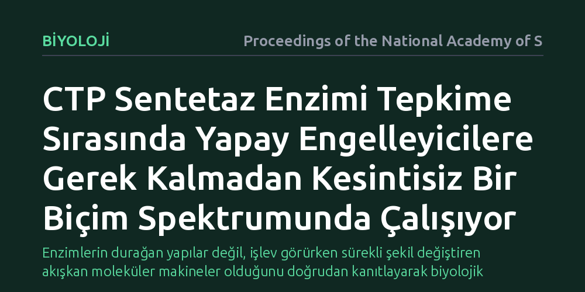

BIYOLOJI · Proceedings of the National Academy of Sciences · 2026-10-24
Araştırmacılar, nükleotid sentezinde kritik rol oynayan CTP sentetaz enziminin doğal çalışma anındaki dinamik biçim değişikliklerini tepkime temelli kriyoelektron mikroskopisiyle inceledi. Çalışma, enzimin yapay kimyasallarla dondurulmaya gerek kalmadan tepkime boyunca kesintisiz bir hareket ve yapı spektrumu sergilediğini ortaya koydu.
Enzimlerin durağan yapılar değil, işlev görürken sürekli şekil değiştiren akışkan moleküler makineler olduğunu doğrudan kanıtlayarak biyolojik süreçleri anlama biçimimizi yeniler.

Yaşamın devamı için gerekli olan kimyasal tepkimeleri yürüten enzimler, geleneksel yapısal biyoloji yöntemlerinde genellikle "donmuş" veya hareketsiz halleriyle incelenir. Bilim insanları uzun yıllar boyunca bir enzimin üç boyutlu yapısını çözebilmek için onu kristalleştirmek ya da yapay engelleyici moleküller ekleyerek belirli bir aşamada kilitlemek zorunda kaldı. Ancak bu yaklaşım, çalışan bir motorun hareketini anlamak yerine sadece park halindeki fotoğrafına bakmaya benziyordu.
Hücrelerimizde genetik materyalin yapı taşlarından olan CTP molekülünün sentezini sağlayan CTP sentetaz enzimi de benzer bir bilmecenin merkezindeydi. Enzimin kimyasal tepkimeyi gerçekleştirirken hangi ara aşamalardan geçtiği, şeklini nasıl değiştirdiği ve moleküler parçalarının nasıl uyum içinde çalıştığı doğrudan gözlemlenemiyordu. Bu çalışmanın temel hedefi, enzimi yapay kimyasallarla durdurmadan, doğal tepkime anındaki kesintisiz hareketini yakalamaktı.
Araştırmacılar bu zorluğu aşmak için tepkime temelli kriyoelektron mikroskopisi adı verilen bir yaklaşım geliştirdi. Bu teknikte enzim, tepkimeye gireceği maddelerle bir araya getirildikten hemen sonra, tepkime devam ederken saniyenin çok küçük bir kesri içinde hızla donduruldu. Böylece enzimi tek bir durağan yapıya hapseden kimyasal kilitlere gerek kalmadan, çalışan moleküller en doğal hallerinde korundu.
Dondurulan numuneler elektron mikroskobu altında incelenerek yüz binlerce bireysel enzim parçacığının yüksek çözünürlüklü görüntüleri toplandı. Gelişmiş veri analizi ve görüntü sınıflandırma algoritmaları sayesinde, her biri tepkimenin farklı bir anında yakalanmış bu görüntüler bir araya getirildi ve enzimin üç boyutlu hareketini temsil eden kesintisiz bir yapı havuzu oluşturuldu.
Elde edilen veriler, CTP sentetaz enziminin klasik modellerde öngörüldüğü gibi sadece iki katı durum arasında sıçramadığını gösterdi. Aksine enzim, tepkime boyunca bir durumdan diğerine pürüzsüzce akan, kesintisiz bir biçim spektrumu üzerinde hareket ediyordu. Katalitik merkezlerin birbirleriyle olan mekânsal ilişkisi, molekülün esnek bölgeleri sayesinde dinamik biçimde ayarlanıyordu.
Analizler ayrıca, enzimin nükleotid sentezini gerçekleştiren ana bölgesi ile azot aktarımını sağlayan diğer alanı arasındaki koordinasyonun anlık yapısal esnemelerle sağlandığını belgeledi. Tepkimeye giren maddelerin bağlanması ve ürünün serbest kalması, enzimin tek bir kalıba kilitlenmesini gerektirmeden geniş bir hareket serbestisi içinde gerçekleşiyordu.
Bu bulgular, enzim biyolojisine bakış açımızda önemli bir denge unsuru sunuyor. Biyolojik makinelerin katı dişlilerden oluşan statik aygıtlar değil, termal hareketlerin yönlendirdiği akışkan ve esnek yapılar olduğu gerçeği görsel olarak doğrulandı. Yazarların belirttiği gibi, enzimleri doğal koşullarında çalışırken yakalamak yapısal biyolojinin "kutsal kasesi" olarak görülüyordu ve bu yöntem bu hedefe giden yolu somutlaştırdı.
Pratik açıdan bakıldığında ise CTP sentetaz, bakteriyel enfeksiyonlardan parazit kaynaklı hastalıklara kadar birçok alanda kritik bir ilaç hedefidir. Enzimin yalnızca durağan bir haline değil, tepkime sırasındaki geçiş hallerine ve esnek ceplerine odaklanan yeni nesil ilaç moleküllerinin tasarlanması, gelecekte çok daha özgül ve direnç gelişimine kapalı tedavilerin önünü açabilir.